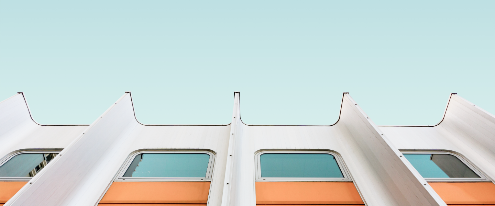

Manifest is a newborn theme.
Clean, simple and fast.

Blog
Technology, Interface Design
Using UX Design to Build a
Sustainable Future
6 May, 2020
Transformation has to be driven by everybody, not just by climate groups, and we have a responsibility to use our influence to drive this. →
Technology, Interface Design
Using UX Design to Build a
Sustainable Future
6 May, 2020
Transformation has to be driven by everybody, not just by climate groups, and we have a responsibility to use our influence to drive this. →
Latest Posts
View All →Interface Design
8 June, 2020
UX traffic light colours
UI has to make a huge visual difference between warning, an alert and a success.
Technology
6 May, 2020
Using UX Design to Build a Sustainable Future
UI has to make a huge visual difference between warning, an alert and a success.
Visual Design
8 June, 2020
Creativity vs. UX
Is it possible to create a delightful user experience without following best UX practices?
Full-time UI/UX designer
Head of Design at VeronaLabs.com
We work with clients around the world from our headquarters in Charleston, South Carolina.
We focus on naming, branding, brand narratives, website design and development, and brand experiences.